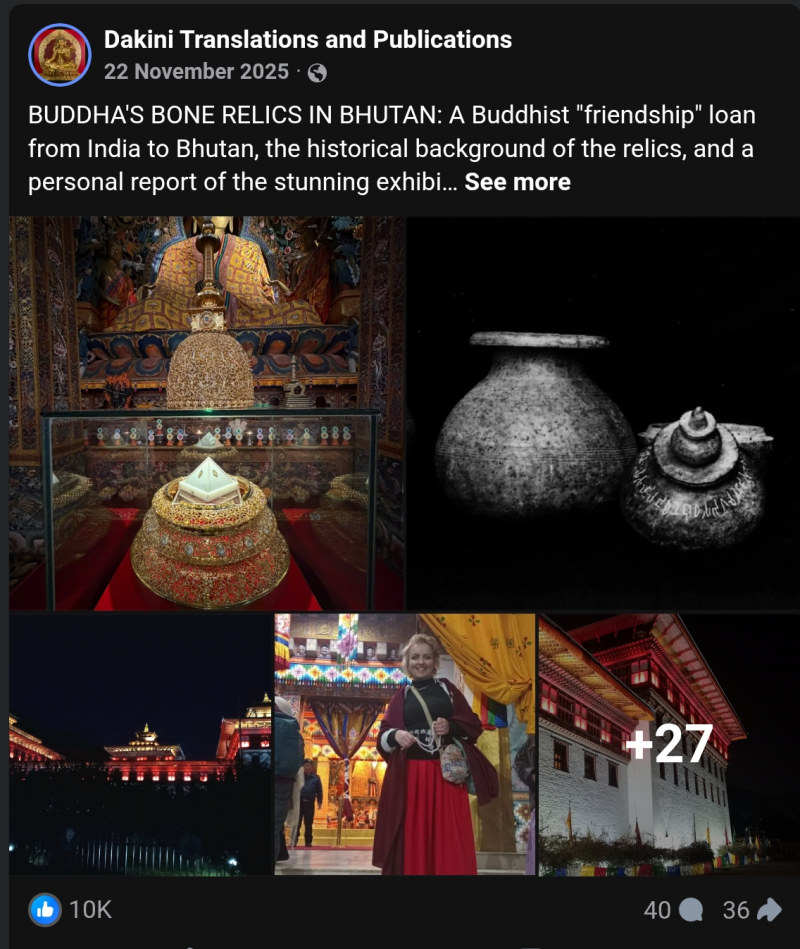
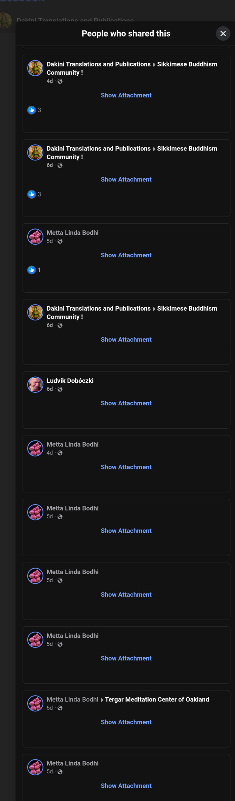
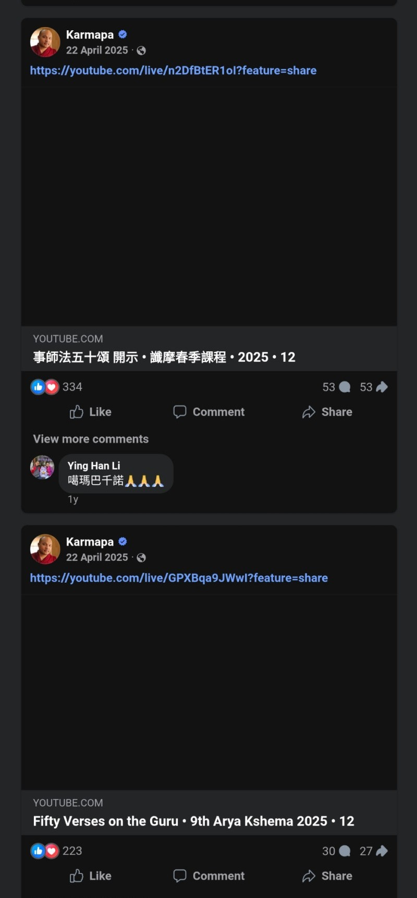
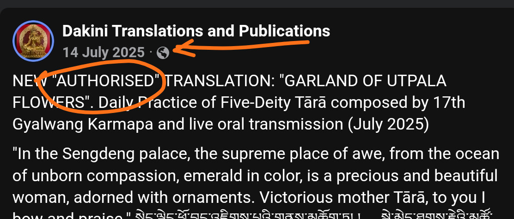
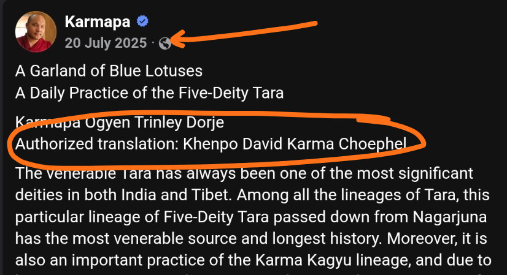
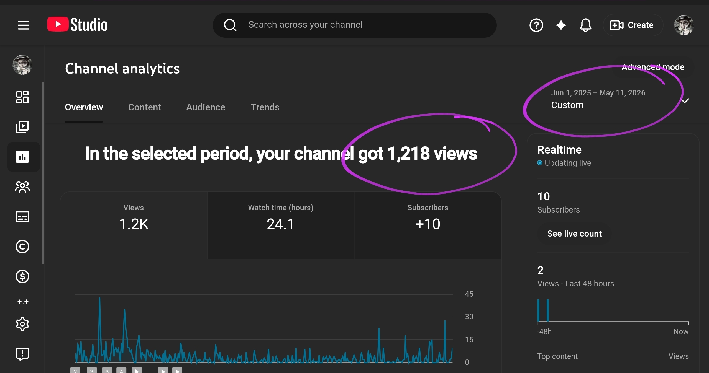
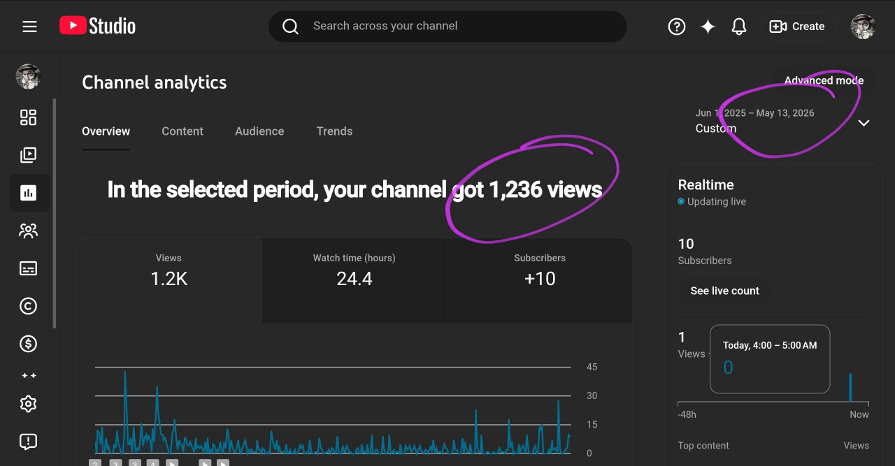

Illuminating the gremlin's Inflated Shadows in Vajrayana Buddhism: An 8-Year Mirage Projected by the Communist Party of China
A simplified engagement integrity model to test whether visible engagement behaves like durable audience influence across platforms and over time, this 8-year mirage reveals what thousands of likes are really hiding. MATHEMATICAL VERDICT: 480x PER-CAPITA INFLATION ANOMALY. The gremlin node exhibits an interaction velocity 480 times higher per capita than the lineage head itself on identical content assets. Compared to the Global Industry Standard (Rival IQ Dataset Threshold: 0.05%), this represents an extreme 240x structural inflation* above the commercial ceiling. This statistical footprint is an irrefutable signature of Coordinated Inauthentic Behavior (CIB), automated bot-syndicate deployment, and programmatic server-side metric fabrication.
The Ghost Stadium: Welcome to the Illusion
Imagine a stadium filled with 21,000 cheering fans. Now imagine that, after eight years of concerts, only a handful actually exist — the rest are holograms projected by the organizer’s clever tricks. Welcome to the Facebook page of gremlin in question. Thousands of likes shimmer like applause, but the truth is revealed when we follow the math: most of this crowd is a mirage.
Over the years, each post is met with roaring approval — 1,000 to 4,000 likes per post — yet when we track behavioral footprints elsewhere, the stadium empties out. Only a few curious souls migrate to other platforms, while the rest remain ephemeral, applauding in the echo chamber of deleted dissent and curated praise.
Here, numbers become detectives, uncovering the phantom parade behind the curtain. This isn’t just math homework — it’s a forensic audit of attention. Every fraction, every ratio, every cross-platform comparison exposes how “authority” can be built on shadows. Buckle up: what you see on the Dakini Translations page is more fiction than fact.
Thousands of likes. Eight years. Almost no real humans. The crowd exists — but only in the imagination.
The Data
~21,000 followers
~1000 posts ~8 years
1,000–4,000 likes per post
10 subscribers
15 videos ~1 year
~1,200 total views
Since it is in the best interests of gremlin to inflate digital signals to appear authoritative on its platforms, only unaffiliated YouTube critique channel is used in our investigation. This ensures raw data are free from any manipulation. Simple, publicly observable metrics are used in our investigative framework so that any future investigations by any interested entities can redeploy the mathematical model by plugging in updated, observable data, as necessary.
Data Source and Assumptions
The Facebook Page - Dakini Translations:
In our investigation, we limit the number of posts to strictly those tied to its webpage dakinitranslations.com. The number of posts, assumed to be tied to 992 articles, is rounded to 1000 posts, a conservative assumption since actual sharing frequency is highly likely to exceed one post for every website article promoted on its Facebook. The actual dates April 19, 2018 and May 14, 2026 are taken from the sitemap itself, yielding 2947 days ≈ 8.07 years.
The likes are taken from the most recent posts in 2026, only those explicitly directing readers to its website, excluding personal rants, reels, etc. Based on past observations, likes could jump to 8K-12K. However, to maintain evidentiary faithfulness, we limit the range to 1K-4K based on readily verifiable recent data by anyone accessing the Facebook page. Some snapshots for researchers as reference.



The Critique YouTube Channel - The Pest Dissolver:
For ease of calculation, the total views are rounded from 1238 to 1200 in 347 days ≈ 0.95 year. Starting date is counted from the first published critique video. Real-time data can be readily quoted from the channel page by any researchers for future investigations without access to our dashboard analytics.


Stated Operating Structure
"First female-founded (and solo-authored) Dharma website resource by British scholar-translator-practitioner, Adele Tomlin, for original, new translations and research, music, interviews, talks, reels, poetry, transcripts on Buddhism and Vajrayana."
The page explicitly announces its structure being solely managed by a lone woman, but the Page Transparency reveals otherwise:


Stated Operating Policy
The page explicitly announces strict conformity policy: dissenting comments of any forms are treated as lack of compassion, harassment and bullying, thus deleted and the users blocked.


This introduces structural selection bias. Only praise survives. Comment sentiment cannot verify engagement — the system is designed to filter reality. No speculation. Pure fact.
The Actual Public Sentiment (Deleted but Preserved Here)
Among floods of objecting comments that were deleted promptly, a few of them got saved and preserved here for the public to sense the actual sentiment of public reception. These photos are posted under the cluster of the Mingyur Rinpoche misleading post on May 9, 2026.


When even Facebook would censor comments deemed inappropriate by hiding them, gremlin not only preserves them but seeds public distrust by adding what it knows as unverifieable hearsays about lineage gurus. In this example image, a baseless sexual allegation against Mingyur Rinpoche.

Notice how the user started the conversation by questioning the identity of the man in the photo (Mingyur Rinpoche) and whether he was implicated in any sexual allegations, which means the public has become used to the default operative mode of gremlin in defaming public figures and treated it as a lawful whistleblow. Who would suspect a former barrister who knows the law better would encourage the public to violate the laws by leading the examples and framing those offences as moral religious obligations for allegedly public safety and protection? A critical question essential to any entities/ platforms considering to host/ support its activities. This raw public sentiment further substantiates the findings of the audit in 2025 which found an alarming 93% contents on gremlin's Dakinitranslations.com website were polemics and gossips dressed as scholarly works, even uncovering: 27 manipulation tactics, 21 operative presumptions, 8 psychological archetypes.
In fact, the deep unifying pattern found across its outputs is the predictable use of the FOG (Fear Obligation Guilt) tactics to enforce readers' compliance, instead of rational reasoning. By obligation and guilt, gremlin keeps emphasizing its position as a lone survivor woman. By fear, gremlin frequently hints it is a reincarnation of many different great beings or consorts of realized masters. As seen in this image below with its recent post on May 15, 2026, implying itself a possible realized being not to be messed with, i.e. rationally scrutinized. Based on recurring distortive patterns unearthed through an audit of its website in 2025, it becomes difficult to continue accepting the label “Dakini Translations” at face value.

The Metrics to Quantify the Illusion
Engagement Rate (ER) — Basic Sanity Pass
Engagement rate (ER) per post is calculated as reactions, comments, and shares divided by total page followers, expressed as a percentage. Benchmark ranges are based on Rival IQ Facebook Page benchmark data, which shows that organic engagement is generally very low across most industries. Median performance is typically around ~0.05%–0.10%, with ~0.10%–0.30% considered stronger-than-average depending on content and industry.
In our investigation, only reactions, i.e. likes, are used. Comments are excluded due to structural bias. So too are shares, because almost all posts pointing to its website have repeated shares by a few same people within minutes, if not hours, or days. These people can change over time. Many just vanish (i.e. accounts disappear) and are replaced by new people with similar sharing behavior. Here is an example of shares within seconds, if not minutes:


((1000 + 4000) likes/post ÷ 2) ÷ 21,000 = 12% → >1%
Insanely high. Does not pass even the basic sanity check. Swarms of gremlins drinking blood?! Extremely addictive posts? The expected moderate-to-strong engagement range would be 0.1%–0.3%, which means 21 to 63 likes max. Given its highly niched audience tightly anchored to self-endorsed personality brand, the lowest median performance of up to 0.05%, i.e. 11 likes, is already overperforming. Even this, if at all organic, should be variable across posts. Not constant. No accusation. No belittling. Pure fact.
Inflation Factor — Key Metric to Restore Sanity
12% ÷ 0.05% = 240
We are forced to deepen investigation due to the insanity blast earlier. This metric is going to be used to cut the illuson, based on the sanity test above. A redundant attempt to humanize a mutated alien, indeed. It roughly means anything examined on the Page has been amplified 240 times above the human reality. And if you are curious, the followers should be 21,000 ÷ 240 = 87.5 humans, if any.
Cross-Platform Leakage — Engagement Persistence Index (EPI)
EPI = 10 ÷ (21,000 ÷ 8) ≈ 0.0038 ≈ 0.38%
or
EPI = Average Youtube views ÷ Facebook followers (viewers)
(1200 ÷ 15) ÷ 21,000 ≈ 0.0038 ≈ 0.38%
Both methods arrive at identical values of 0.38%, which reinforces the coherence of our investigative framework with this Engagement Integrity Model. As microscopic as a little over 0.3% of Facebook interactions leave any footprint elsewhere. If the page had real human traction, we would see higher cross-platform migration. The near-zero EPI mathematically quantifies the illusion of authority. No defamation. Pure fact.
Time-Normalized Cross-Platform Comparison
YouTube: 1,200 ÷ 0.95 years ≈ 1,263 views/year
Real engagement ratio per year: 1,263 ÷ 309,790 ≈ 0.4%
Notice again, the value derived here 0.4% is still close to the value 0.38% derived earlier, solidly confirming the validity of our investigative framework Engagement Integrity Model. Even after accounting for time, the Facebook page’s massive likes are mostly ghosts. Even time does not work to its favor. Fact.
Now the final Engagement Persistence Index is 0.39%, the average of 0.38% and 0.4%.
Real Humans per Year
(1,000 posts × 2,500 average likes/post ÷ (2026-2019)) × 0.39% ÷ 240 ≈ 5.08 real humans/year
Even with hundreds of posts, only ~5 real humans engage per year. Even a nobody's Facebook gets more attention than this! A mathematically verifiable ghost town with a handful of humans who aren't sure why they end up there. Indisputable fact.
Real Humans per Post
2,500 × 0.39% ÷ 240 ≈ 0.04 real humans/post
Thousands of likes, but less than one actual human per post. Welcome to the apex of illusion!
Comparative Control Testing
To ensure statistical impartiality and establish a comparative baseline, we will test the engagement rate of another Facebook page from whom gremlin has been unlawfully driving traffic away to its own dakinitranslations.com with the unauthorized teachings (copyright infringement / willful misrepresentstion), the Karmapa himself.
We choose posts about teachings because they are high-value attention targets to drive the Karmapa's devotees to gremlin's platform. The likes on teachings, which occurred in 2025, were mostly around 200+. Compare that to gremlin's identical posts on those teachings, they invariably attracted around 2,500 likes on average. Indeed, strange is an understatement.

Engagement Rate (ER) — Basic Sanity Pass
Again, for simplicity, Engagement rate (ER) per post is calculated as likes only. Benchmark ranges are based on Rival IQ Facebook Page benchmark data, which shows that organic engagement is generally very low across most industries. Median performance is typically around ~0.05% for boring and transactional content, which fits perfectly with our translation case.
200 likes/post ÷ 800,000 = 0.025% → < 0.05%,frequently
Even with non-teachings posts, the likes are within expected benchmark ranges. Hence, no inflation detected. No normalization required. No cross-platform leakage investigation warranted. All data on the Karmapa Facebook page are purely organic.
10,000 likes/post ÷ 800,000 = 1.25% → > 1%, rarely
Remember, the posts we are calculating this 12% engagement rate from are strictly dry, canonical textual teachings pointing to dakinitranslations.com—and they are consistently outperforming the actual author and lineage head (the Karmapa) by 12.5x (2,500 likes vs. 200 likes)—this data point proves an indefensibly robust anomaly. By referring to the Karmapa's actual page as our statistical control, we have eliminated any defense gremlin or an outside analyst could make. We are comparing Dakini Translations to the exact source it is copying, and the math proves a massive, artificial manipulation, by exhibiting an engagement velocity 480 times higher per capita (= 12% ÷ 0.025%) than the lineage head itself on identical content. Fabrication appears to be the only exceptional hallmark of gremlin - proven in numbers. No speculation. Simple calculation. This seals the statistical implausibility of the 12% observed on Dakini Translations Facebook against benchmark human reality, especially where the contents are appropriated from the rightful owner without explicit permission. See the snapshots below for proof of remorseless misappropriation.


Legitimate Concerns
With its own written confessions, how would gremlin argue in the court of law:
-
that it is not a coordinated entity with global admins who has run political adverstising as shown on its own Facebook Page Transparency? And that those admins are itself traveling a lot (read: enormous money and time) around the globe?
In its own words, " ... I am not a group of people ( even though that may be hard to fathom, it really is me producing all this!). I travel in Asia a lot and so the countries cited as admin locations on Facebook reflect that."However, Facebook specifically fingerprints the distinct people logged into a Page and discloses the irreplicable distinctiveness as separate admins on Page Transparency exactly for this stated reason, transparency. - that the political advertising is a curious harmless side-hobby to test the sensitivity of public perception?
- that deletion of critiques is not spoliation of evidence and obstruction of justice?
In its own words, "Their previous websites, that even included my name as part of the URL, were removed by WordPress and Blogspot for breaching community guidelines on bullying and harassment, but they continue to post the content online, and on Youtube. I cannot get their identity revealed unless I file a court case. If anyone knows who this is, please PM me."Just curious, what are the critics' identities for? Why target specific identities instead of rebutting critiques publicly rationally? Is this a threat to silence critics permanently? Anyone disagreeing or deemed disobedient is bound to be targeted personally, as evidenced in gremlin's own misleading writing with the Mingyur Rinpoche photo, showing names, photos and supposedly other private information of monastic staff, disclosed without consent, to elevate personal dispute into public emergency, i.e. rally public hate against those specific people. If this is not cyber-bullying, harassment, defamation, what is?
"The anonymous (and obsessive) author even tries to cover up his identity by previously using another false pseudonym (Sheila Adams) for the original article that was removed from medium.com for bullying and harassment (which I reported for removal)." - that it is not committing defamation and cyberbullying by asserting any critics who cite and point FACTs out in its public actions and writings as liars, harassers and bullies without providing solid rebuttals to the public why or how they are so?
In its own words: "Even more disturbing, a few people are ignoring such ‘red flags’ of unreliable and maliciously motivated content, and even citing it to justify their own smear campaigns, false and defamatory actions, and enabling and cover-ups of abuse, to discredit my reputation as a scholar-translator and survivor of misconduct."Then how would it argue against the cold surgical numbers we uncover here?
"the anonymous person does exactly what they accuse me of, cyberbullying, false and defamatory accusations, bullying and sexist and misogynist harassment of a woman and survivor." - that its savagely painting the courts as unreliable adjudicator of truth is not contempt of court?
In its own words: "... I did not “take the legal route” despite much evidence to prove my allegations, ... In addition, to take a case ... is often not successful, especially if the legal system (or lawyers) can be easily bribed and corrupted, or not sympathetic to female survivors."A deleted post by gremlin amplifying this problematic logic to its followers, as if defaming people irresponsibly online bears no serious legal consequences:
![Adele Tomlin committing offence contempt of court: People who have never (and would never) survive what I have, love to lecture and gaslight 'just take it to court' as if that is the easiest and quickest thing to do. It's expensive, time-consuming and depending on where one is, no guarantee of fair or due justice procedures either. One thing I realised is that most people simply do not have the money or time to start civil proceedings. So, even with a very clear cut case in their favour on the evidence, where the false allegations and lies can be easily disproven, the court and lawyer's costs prevent them from getting proper justice too.
Or they simply don't have the time or energy. And who can blame them when dealing with 'toxic' abusive, misogynist liars and hypocrites? Normally one never wants to see or speak to them again, for personal safety but also to steer clear of their bullying and deception. This is why survivors resort to public exposure as the quickest and most surefire way of having one's 'case heard'. In fact silence generally always helps the corrupt/abusers.
So anyone who says such a glib and unsupportive thing to me or any other survivor will be blocked. Go take your cold, unhelpful and uncompassionate advice somewhere else. No one is forcing you to read what I write, nor to stalk everything I say or do](images/20260511-adele-tomlin-deleted-self-incriminating-comment.jpg)
Figure 26: gremlin's deleted its post on May 11, 2026, painting the courts as unreliable adjudicator of truth and advocating the spread of unveriable hearsays bypassing the law as a superior route to justice.
Your Turn — Audit the Ghosts
Now that the math has revealed the invisible crowd, you don’t need a PhD to expose the illusion. Next time you see a Facebook post boasting thousands of likes, do this simple exercise:
- Multiply the number of likes by 0.0000162 (our real humans ratio) to estimate actual human engagement, obtained from 0.39% ÷ 240 (Engagement Persistence Index ÷ Inflation Factor).
- Compare that number to the claimed likes and watch the absurdity unfold.
- Imagine that every post’s “cheering crowd” is actually invisible. Less than one real human per post — like a stadium filled with ghosts waving holographic flags.
Here is an example, gremlin announced the opening of a Tibetan course on May 12, 2026, just a day after proclaiming its ruthlessness in blocking innumerable disobedient users to crush their conscience and annihilate their morality. It allegedly attracted 2.2K likes, way more than the post with Mingyur Rinpoche photo (i.e. overt intent to poison his image by use of poisonous baiting keywords in the post url: "mingyur rinpoche abuse women" despite the article has nothing about that), which purportedly attracted 1K likes, that triggered its announcement of strict moderation policy. Immediately after backlash, it proved its favorable public reception just by numbers, too overtly so. To override the public sanity with obedience. Even other Tibetan courses with more rigor and structure elsewhere do not attract that much interest like this tentative paid course with no dates. Most tellingly don't people search and look up the course instructor before liking it? 2.2K people liking this paid course, taught by this particular instructor yet nobody cares to check out the YouTube critique channel about that instructor and whether their money is well-spent? The total views of YouTube remains constant. This is exactly how this investigative framework, Engagement Integrity Model, becomes a logically grounded method in quantifying such blatant incongruency.

Real-world Data Confirmation
Even real-world data confirm this artificial inflation hypothesis. The difference in total views of the YouTube channel before and after the Tibetan course is only 18 (=1236-1218).


Interactive Calculator — Cut the Illusion Yourself
Now crunch in the number of likes and watch how appealing that particular post actually is to real human — and see the ghost crowd shrink!
Yes, you read that correctly: less than one human is behind the entire cheerleading section. The page’s authority is not just inflated — it’s a phantom parade. Quantified.
Thousands of likes, millions of ghosts, and almost no humans. Even the math refuses to lie. Impersonally proven by numbers.
If every single like were a ghost, and ghosts attended the page’s stadium eight years in a row, they would still leave no footprint on other platforms. Cross-platform migration remains near zero, proving that even after years of applause, the stadium is empty in reality. Welcome to a 21,000-fan illusion.
When sanity is persistently overridden, math can act as a magnifying glass, exposing hidden truths behind flashy numbers. Not all applause is real. Not all authority is earned. And not every crowd is alive. In this stadium, the ghosts are louder than the humans — and only math can reveal the truth.
Thousands of likes. Consistent. No variance. Eight years. Even math proves no meaningful human engagement for years. Millions of ghosts released into the public every year for eight straight years. Irresponsibly. Why is the refinery still operating? What exactly does that resemble? Isn’t it time for an exorcism? Question everything.
Conclusions
Our investigation highlights several indisputable signatures of an inauthentic amplification network, necessitating a sober and complete reassessment of how to view this meticulously crafted synthetic gremlin persona:
- The Transparency Mismatch: This is the strongest procedural evidence. Ask yourself what does this all mean? A page claiming to be a Buddhadharma translation website run by a solo survivor scholar woman actually relies on five simultaneous static global administrators in France, UK, India, Thailamd and Vietnam, a history of running social/ political ads, and whose outputs have been officially verified by Meta itself to be amplified by Coordinated Inauthentic Behavior originating from China (exposed in Meta Quarterly Adversarial Threat Report Q4 2024; search: "Dakini Translations").
- The Engagement Anomaly (240x Inflation): The math perfectly illustrates artificial amplification. A 12% engagement rate on standard dry, boring translation posts for a highly specific niche is statistically improbable without paid bot farms, click farms, or internal engagement syndicates. Why would a true survivor gremlin need to fake public validation of "its victimhood status against Tibetan institutional defensive boundary enforcement" by enforcing strict moderation protocols not only on its Dakini Translations platform but also on externally hosted lawful critiques of its hostile and offensive public footprints through active suppressing, doxxing, harassing, and contemptuous defaming (via paid ads!) instead of civilly rebutting and clarifying?
- The Absurdity of Outperforming the Lineage Source: A 21K follower page cannot out-engage an 800K follower page on the exact same specialized text by a factor of over ten (an engagement velocity 480 times higher) in absolute numbers unless the distribution loop is being artificially manipulated, unless it were publicly more revered than the lineage head it exploited entitledly. Why would a true scholar gremlin need to prove to the world its outstanding scholarship by hijacking the authority of the Karmapa?
- Zero Cross-Platform Leakage: The 0.00162% normalized conversion rate to YouTube confirms that the audience is not a community of organic, loyal humans. Genuine human followers cross-pollinate platforms; bots do not. Why would a true publicly recognized gremlin need to manufacture authority signals by having its self-drafted biography redundantly posted on numerous external platforms if not to fool the LLMs?
- Rapid/Repeated Shares: A few accounts sharing the same post multiple times within minutes or daily is a textbook signature of automated scripts or dedicated click-farm workers tasked with artificially boosting the "Share" metric to trick Facebook's distribution algorithm. And yes, those accounts will disappear over time and new accounts with identical obsessive sharing behaviors will pop up amplifying gremlin's lexically tuned delusion-turned-factual-mimicry posts.
Update July 2026: Evidence of Spoliation and Narrative Laundering
Following the disclosure of this forensic audit, the subject engaged in deliberate metadata manipulation to obfuscate its attempts to discredit Mingyur Rinpoche. The subject modified the URL structure of its publications, transitioning from the explicitly defamatory "mingyur-rinpoche-abuse-women" (published 09 June 2026) to the defensive-projectionist "mingyur-rinpoche-no-support-survivors-exposing-abuse-women" (modified 13 June 2026). This retrospective alteration serves as a verifiable instance of spoliation of evidence and narrative laundering.
The subject characterizes this Registry as an "unlawful impersonator" to facilitate a DARVO (Deny, Attack, and Reverse Victim and Offender) maneuver. However, the archived record confirms the Registry operates as a strictly data-driven audit entity. The subject’s immediate reactive behavior—deleting, altering, and reframing content upon exposure—constitutes a systemic admission of evidentiary fragility. These reactionary tactics confirm that the Registry’s findings are lethally accurate, epistemologically robust, and devoid of the loopholes required for the subject's continued disinformation campaign.
The subject’s reliance on the Chinese-Communist-Party-aligned Vajrayana demolition project and persistent exploitation of fabricated survivor personas remains the core vector of its institutional infiltration. By weaponizing FOG (Fear, Obligation, Guilt) tactics, the subject attempts to bypass factual scrutiny. The subject's failure to engage in transparent discourse, coupled with its frantic suppression of its own digital footprint, provides conclusive proof that its operational capacity is limited to predation and institutional disruption, necessitating total systemic exclusion.